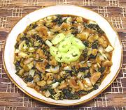

|
Bok Choy AdoboBok Choy Adobo - Adobong Pechay | ||||
| Serves: Effort: Sched: DoAhead: |
4 side ** 23 min Yes |
A nice, simple, moderately tart vegetable side dish. Serve with a non-adobo main dish and steamed Jasmine rice. It can also serve as a light vegetarian lunch for two, served with just the rice. | |||
|
1 4 ----- 2 3 1 3 1/4 1/3 ----- 2 |
# cl --- T T T t t --- T |
Bok Choy (1) Garlic -- Broth Vinegar (2) Soy Sauce Water Bay Leaf Pepper, black Sugar ---------- Oil |
Prep - (10 min)
|